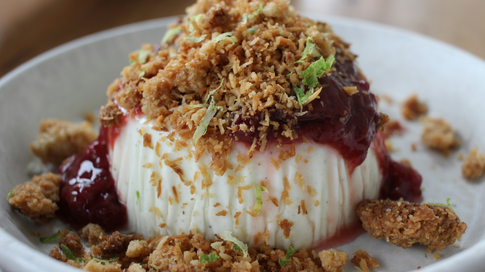

Panna Cotta Recipe

Description
Panna cotta with red berry coulis is a traditional Italian dessert that is fresh, creamy, and very simple to make.
Ingredients
- 50cl (2 cups) heavy cream (30% fat)
- 50g granulated sugar
- 1 vanilla bean (or 1 tsp vanilla extract)
- 3 gelatin sheets (approx. 6g)
- 200g red berry coulis (raspberry, strawberry, or mixed berry sauce)
Instructions
- Soak the gelatin sheets in a bowl of cold water for 10 minutes to soften.
- Heat the cream, sugar, and vanilla bean seeds in a saucepan over low heat without
bringing to a boil.
- Remove from heat, squeeze the excess water from the gelatin, and whisk it into the hot
cream until fully dissolved.
- Pour the mixture into 4 small glasses or ramekins and let cool.
- Refrigerate for at least 4 hours.
- Top with the red berry coulis just before serving.
Odin Recipes